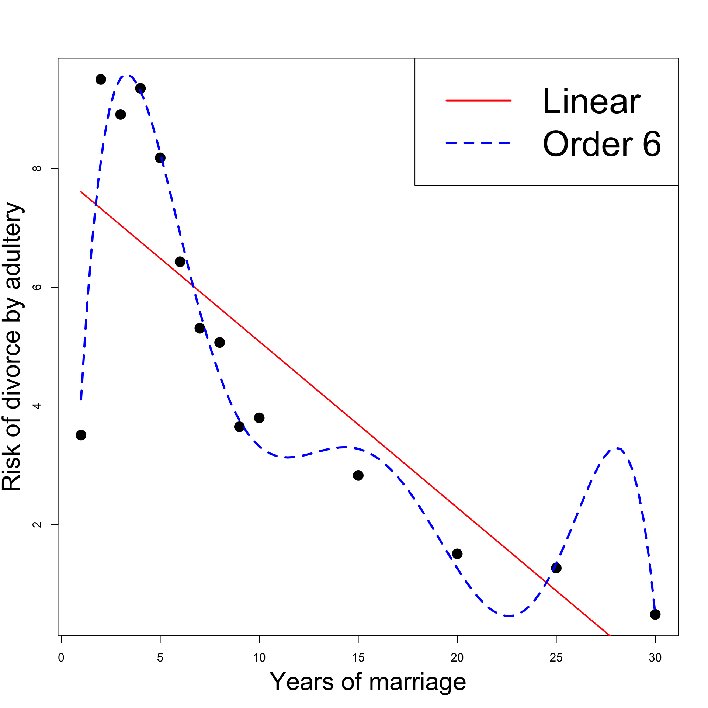

# Enter the data
Z1 <- c(10, 15, 18, 24, 30)
Z3 <- c(52, 75, 97, 129, 152)
# Compute correlation
cor(Z1, Z3)[1] 0.9958817Lecture 11
Y_i = \beta_1 z_{i1} + \beta_2 z_{i2} + \ldots + \beta_p z_{ip} + \varepsilon_i
\det(Z^T Z ) \, \approx \, 0 \, \quad \implies \quad Z^T Z \, \text{ is (almost) not invertible}
\text{Multicollinearity = multiple (linear) relationships between the X-variables}
X-variables inter-related \quad \implies \quad hard to isolate individual influence on Y
Perfect collinearity for Z_1 and Z_2
No perfect collinearity for Z_1 and Z_3
But Z_3 is small perturbation of Z_2
| Z_1 | Z_2 | Z_3 |
|---|---|---|
| 10 | 50 | 52 |
| 15 | 75 | 75 |
| 18 | 90 | 97 |
| 24 | 120 | 129 |
| 30 | 150 | 152 |
| Z_1 | Z_2 | Z_3 |
|---|---|---|
| 10 | 50 | 52 |
| 15 | 75 | 75 |
| 18 | 90 | 97 |
| 24 | 120 | 129 |
| 30 | 150 | 152 |
Z = \left( \begin{array}{cccc} z_{11} & z_{12} & \ldots & z_{ip} \\ z_{21} & z_{22} & \ldots & z_{2p} \\ \ldots & \ldots & \ldots & \ldots \\ z_{n1} & z_{n2} & \ldots & z_{np} \\ \end{array} \right)
{\rm rank} (Z) < p
{\rm rank} \left( Z^T Z \right) < p
Z^T Z \,\, \text{ is NOT invertible}
\hat{\beta} = (Z^T Z)^{-1} Z^T y
In practice one never has exact Multicollinearity
In case of approximate Multicollinearity it holds that
This is because of:
\mathop{\mathrm{e.s.e.}}= \xi_{jj}^{1/2} \, S \,, \qquad \quad S^2 = \frac{\mathop{\mathrm{RSS}}}{n-p}
The numbers \xi_{jj} are diagonal entries of Z^T Z
Approximate Multicollinearity implies that
\mathop{\mathrm{e.s.e.}}= \xi_{jj}^{1/2} S
t = \frac{\hat{\beta}_j}{ \mathop{\mathrm{e.s.e.}}}
But multicollinearity increases the \mathop{\mathrm{e.s.e.}}
Therefore the t-statistic reduces in size:
It becomes harder to reject incorrect hypotheses!
Often can know in advance when you might experience Multicollinearity
High R^2 values couple with small t-values
Very large \mathop{\mathrm{e.s.e.}}
Numerical instabilities:
Consider the following illustrative example
Want to explain expenditure Y in terms of
To detect Multicollinearity look out for
| Expenditure Y | Income X_2 | Wealth X_3 |
|---|---|---|
| 70 | 80 | 810 |
| 65 | 100 | 1009 |
| 90 | 120 | 1273 |
| 95 | 140 | 1425 |
| 110 | 160 | 1633 |
| 115 | 180 | 1876 |
| 120 | 200 | 2052 |
| 140 | 220 | 2201 |
| 155 | 240 | 2435 |
| 150 | 260 | 2686 |
# Enter data
y <- c(70, 65, 90, 95, 110, 115, 120, 140, 155, 150)
x2 <- c(80, 100, 120, 140, 160, 180, 200, 220, 240, 260)
x3 <- c(810, 1009, 1273, 1425, 1633, 1876, 2052, 2201, 2435, 2686)
# Fit model
model <- lm(y ~ x2 + x3)
# We want to display only part of summary
# First capture the output into a vector
temp <- capture.output(summary(model))
# Then print only the lines of interest
cat(paste(temp[9:20], collapse = "\n"))Coefficients:
Estimate Std. Error t value Pr(>|t|)
(Intercept) 24.77473 6.75250 3.669 0.00798 **
x2 0.94154 0.82290 1.144 0.29016
x3 -0.04243 0.08066 -0.526 0.61509
---
Signif. codes: 0 '***' 0.001 '**' 0.01 '*' 0.05 '.' 0.1 ' ' 1
Residual standard error: 6.808 on 7 degrees of freedom
Multiple R-squared: 0.9635, Adjusted R-squared: 0.9531
F-statistic: 92.4 on 2 and 7 DF, p-value: 9.286e-06Three basic statistics
Main red flag for Multicollinearity:
High R^2 value suggests model is really good
However low t-values imply neither income nor wealth affect expenditure
F-statistic is high, meaning that at least one between income nor wealth affect expenditure
The wealth variable has the wrong sign (\hat \beta_3 < 0)
Multicollinearity is definitely present!
[1] 0.9989624This once again confirms Multicollinearity is present
Conclusion: The variables Income and Wealth are highly correlated
Klein’s rule of thumb: Multicollinearity will be a serious problem if:
Example: In the Expenditure vs Income and Wealth dataset we have
Regressing Y against X_2 and X_3 gives R^2=0.9635
Regressing X_2 against X_3 gives R^2 = 0.9979
Klein’s rule of thumb suggests that Multicollinearity will be a serious problem
Multicollinearity is essentially a data-deficiency problem
Sometimes we have no control over the dataset available
Important point:
Multicollinearity is a sample feature
Possible that another sample involving the same variables will have less Multicollinearity
Acquiring more data might reduce severity of Multicollinearity
More data can be collected by either
To do this properly would require advanced Bayesian statistical methods
This is beyond the scope of this module
Multicollinearity may be reduced by transforming variables
This may be possible in various different ways
Further reading in Chapter 10 of [1]
Simplest approach to tackle Multicollinearity is to drop one or more of the collinear variables
Then one has to find the best combination of X variables which reduces Multicollinearity
Such selection process can be aided by Stepwise regression (more later)
Consider again the Expenditure vs Income and Wealth dataset
The variables Income and Wealth are highly correlated
Intuitively we expect both Income and Wealth to affect Expenditure
Solution can be to drop either Income or Wealth variables
Coefficients:
Estimate Std. Error t value Pr(>|t|)
(Intercept) 24.45455 6.41382 3.813 0.00514 **
x2 0.50909 0.03574 14.243 5.75e-07 ***
---
Signif. codes: 0 '***' 0.001 '**' 0.01 '*' 0.05 '.' 0.1 ' ' 1
Residual standard error: 6.493 on 8 degrees of freedom
Multiple R-squared: 0.9621, Adjusted R-squared: 0.9573
F-statistic: 202.9 on 1 and 8 DF, p-value: 5.753e-07Strong evidence that Expenditure increases as Income increases
Coefficients:
Estimate Std. Error t value Pr(>|t|)
(Intercept) 24.411045 6.874097 3.551 0.0075 **
x3 0.049764 0.003744 13.292 9.8e-07 ***
---
Signif. codes: 0 '***' 0.001 '**' 0.01 '*' 0.05 '.' 0.1 ' ' 1
Residual standard error: 6.938 on 8 degrees of freedom
Multiple R-squared: 0.9567, Adjusted R-squared: 0.9513
F-statistic: 176.7 on 1 and 8 DF, p-value: 9.802e-07Strong evidence that Expenditure increases as Wealth increases
Stepwise regression: Method of comparing regression models
Involves iterative selection of predictor variables X to use in the model
It can be achieved through
Note: Significance criterion for X_j is in terms of AIC
Note: Stepwise Selection ensures that at each step all the variables are significant
# Forward selection
best.model <- step(null.model,
direction = "forward",
scope = formula(full.model)) GNP Unemployed Armed.Forces Population Year Employed
1 234.289 235.6 159.0 107.608 1947 60.323
2 259.426 232.5 145.6 108.632 1948 61.122
3 258.054 368.2 161.6 109.773 1949 60.171Goal: Explain the number of Employed people Y in the US in terms of
Code for this example is available here longley_stepwise.R
Longley dataset available here longley.txt
Download the data file and place it in current working directory
Y = \beta_1 + \beta_2 \, X_2 + \beta_3 \, X_3 + \beta_4 \, X_4 + \beta_5 \, X_5 + \beta_6 \, X_6 + \varepsilon
GNP Unemployed Armed.Forces Population Year
GNP TRUE FALSE FALSE TRUE TRUE
Unemployed FALSE TRUE FALSE FALSE FALSE
Armed.Forces FALSE FALSE TRUE FALSE FALSE
Population TRUE FALSE FALSE TRUE TRUE
Year TRUE FALSE FALSE TRUE TRUER^2 = 1 - \frac{\mathop{\mathrm{RSS}}}{\mathop{\mathrm{TSS}}}
Drawback: R^2 increases when number of predictors increases
We saw this phenomenon in the Galileo example in Lecture 10
Fitting the model \rm{distance} = \beta_1 + \beta_2 \, \rm{height} + \varepsilon yielded R^2 = 0.9264
In contrast the quadratic, cubic, and quartic models yielded, respectively R^2 = 0.9903 \,, \qquad R^2 = 0.9994 \,, \qquad R^2 = 0.9998
Fitting a higher degree polynomial gives higher R^2
Conclusion: If the degree of the polynomial is sufficiently high, we will get R^2 = 1
(\rm{height}_1, \rm{distance}_1) \,, \ldots , (\rm{height}_n, \rm{distance}_n)
\hat y_i = y_i \,, \qquad \forall \,\, i = 1 , \ldots, n
\mathop{\mathrm{RSS}}= \sum_{i=1}^n (y_i - \hat y_i )^2 = 0 \qquad \implies \qquad R^2 = 1
Warning: Adding increasingly higher number of parameters is not good
The best model seems to be Linear y = \beta_1 + \beta_2 x + \varepsilon
Linear model interpretation:
# Divorces data
year <- c(1, 2, 3, 4, 5, 6,7, 8, 9, 10, 15, 20, 25, 30)
percent <- c(3.51, 9.5, 8.91, 9.35, 8.18, 6.43, 5.31,
5.07, 3.65, 3.8, 2.83, 1.51, 1.27, 0.49)
# Fit linear model
linear <- lm(percent ~ year)
# Fit order 6 model
order_6 <- lm(percent ~ year + I( year^2 ) + I( year^3 ) +
I( year^4 ) + I( year^5 ) +
I( year^6 ))
# Scatter plot of data
plot(year, percent, xlab = "", ylab = "", pch = 16, cex = 2)
# Add labels
mtext("Years of marriage", side = 1, line = 3, cex = 2.1)
mtext("Risk of divorce by adultery", side = 2, line = 2.5, cex = 2.1)
# Plot Linear Vs Quadratic
polynomial <- Vectorize(function(x, ps) {
n <- length(ps)
sum(ps*x^(1:n-1))
}, "x")
curve(polynomial(x, coef(linear)), add=TRUE, col = "red", lwd = 2)
curve(polynomial(x, coef(order_6)), add=TRUE, col = "blue", lty = 2, lwd = 3)
legend("topright", legend = c("Linear", "Order 6"),
col = c("red", "blue"), lty = c(1,2), cex = 3, lwd = 3)
# Divorces data
year <- c(1, 2, 3, 4, 5, 6,7, 8, 9, 10, 15, 20, 25, 30)
percent <- c(3.51, 9.5, 8.91, 9.35, 8.18, 6.43, 5.31,
5.07, 3.65, 3.8, 2.83, 1.51, 1.27, 0.49)
# Fit linear model
linear <- lm(percent ~ year)
# Fit order 6 model
order_6 <- lm(percent ~ year + I( year^2 ) + I( year^3 ) +
I( year^4 ) + I( year^5 ) +
I( year^6 ))
# Scatter plot of data
plot(year, percent, xlab = "", ylab = "", pch = 16, cex = 2)
# Add labels
mtext("Years of marriage", side = 1, line = 3, cex = 2.1)
mtext("Risk of divorce by adultery", side = 2, line = 2.5, cex = 2.1)
# Plot Linear Vs Quadratic
polynomial <- Vectorize(function(x, ps) {
n <- length(ps)
sum(ps*x^(1:n-1))
}, "x")
curve(polynomial(x, coef(linear)), add=TRUE, col = "red", lwd = 2)
curve(polynomial(x, coef(order_6)), add=TRUE, col = "blue", lty = 2, lwd = 3)
legend("topright", legend = c("Linear", "Order 6"),
col = c("red", "blue"), lty = c(1,2), cex = 3, lwd = 3)
# Divorces data
year <- c(1, 2, 3, 4, 5, 6,7, 8, 9, 10, 15, 20, 25, 30)
percent <- c(3.51, 9.5, 8.91, 9.35, 8.18, 6.43, 5.31,
5.07, 3.65, 3.8, 2.83, 1.51, 1.27, 0.49)
# Fit linear model
linear <- lm(percent ~ year)
# Fit order 6 model
order_6 <- lm(percent ~ year + I( year^2 ) + I( year^3 ) +
I( year^4 ) + I( year^5 ) +
I( year^6 ))
# Scatter plot of data
plot(year, percent, xlab = "", ylab = "", pch = 16, cex = 2)
# Add labels
mtext("Years of marriage", side = 1, line = 3, cex = 2.1)
mtext("Risk of divorce by adultery", side = 2, line = 2.5, cex = 2.1)
# Plot Linear Vs Quadratic
polynomial <- Vectorize(function(x, ps) {
n <- length(ps)
sum(ps*x^(1:n-1))
}, "x")
curve(polynomial(x, coef(linear)), add=TRUE, col = "red", lwd = 2)
curve(polynomial(x, coef(order_6)), add=TRUE, col = "blue", lty = 2, lwd = 3)
legend("topright", legend = c("Linear", "Order 6"),
col = c("red", "blue"), lty = c(1,2), cex = 3, lwd = 3)
The AIC is a number which measures how well a regression model fits the data
Also R^2 measures how well a regression model fits the data
The difference between AIC and R^2 is that AIC also accounts for overfitting
The formal definition of AIC is
{\rm AIC} := 2p - 2 \log ( \hat{L} )
p = number of parameters in the model
\hat{L} = maximum value of the likelihood function
\ln(\hat L)= -\frac{n}{2}\ln(2\pi) - \frac{n}{2}\ln(\hat\sigma^2) - \frac{1}{2\hat\sigma^2} \mathop{\mathrm{RSS}}\,, \qquad \hat \sigma^2 := \frac{\mathop{\mathrm{RSS}}}{n}
\ln(\hat L)= - \frac{n}{2} \log \left( \frac{\mathop{\mathrm{RSS}}}{n} \right) + C
C is constant depending only on the number of sample points
Thus C does not change if the data does not change
{\rm AIC} = 2p + n \log \left( \frac{ \mathop{\mathrm{RSS}}}{n} \right) - 2C
| Years of Marriage | 1 | 2 | 3 | 4 | 5 | 6 | 7 |
|---|---|---|---|---|---|---|---|
| % divorces adultery | 3.51 | 9.50 | 8.91 | 9.35 | 8.18 | 6.43 | 5.31 |
| Years of Marriage | 8 | 9 | 10 | 15 | 20 | 25 | 30 |
|---|---|---|---|---|---|---|---|
| % divorces adultery | 5.07 | 3.65 | 3.80 | 2.83 | 1.51 | 1.27 | 0.49 |
# Divorces data
year <- c(1, 2, 3, 4, 5, 6,7, 8, 9, 10, 15, 20, 25, 30)
percent <- c(3.51, 9.5, 8.91, 9.35, 8.18, 6.43, 5.31,
5.07, 3.65, 3.8, 2.83, 1.51, 1.27, 0.49){\rm percent} = \beta_1 + \varepsilon
\rm{percent} = \beta_1 + \beta_2 \, {\rm year} + \beta_3 \, {\rm year}^2 + \ldots + \beta_7 \, {\rm year}^6
Call:
lm(formula = percent ~ year)
.....